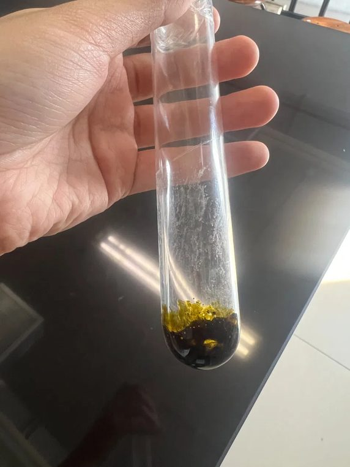
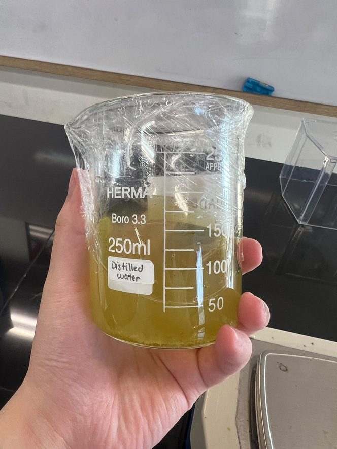
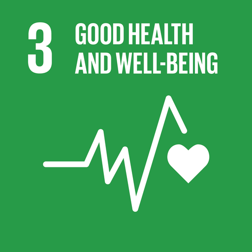

Evaluation of the Antidiabetic Potential of Ethanolic Leaf Extract of Kembang Merak (Caesalpinia pulcherrima) on Blood Glucose Levels in Mice (Mus musculus)
A locally available ornamental plant, tested as a low-cost herbal approach to lowering, and keeping down, blood glucose.
Antioxidant and Antidiabetic Potential of C. pulcherrima Leaf Extract
Between 1980 and 2014, the number of cases of diabetes mellitus increased from approximately 108 million to 422 million. Plant-derived compounds have attracted research interest due to their antioxidant and antidiabetic potential, including those in Caesalpinia pulcherrima (kembang merak). This study aimed to investigate the potential antidiabetic effect of C. pulcherrima ethanolic leaf extract by observing changes in blood glucose levels in mice.
C. pulcherrima leaves were dried, ground, and macerated to obtain an ethanolic leaf extract. Eight male mice were divided into two groups of four. Group A received the extract via their drinking water at a dosage of 200 mg/kg BW, while Group B served as the control. Treatments were given for seven days. Blood glucose levels were measured before, after, and seven days post-treatment, and the results were analysed descriptively.
In Group A, treatment lowered average blood glucose from 159.25 mg/dL to 114.75 mg/dL and sustained this reduction at 118.75 mg/dL seven days post-treatment (H+7). Group B also showed a reduction, from 170.5 mg/dL to 131 mg/dL, but rebounded to 152.75 mg/dL by H+7. By combating diabetes, this study supports the United Nations’ 3rd Sustainable Development Goal, good health and well-being. In conclusion, C. pulcherrima leaf extract decreased blood glucose and maintained the lower level after treatment ended.
Diabetes is rising, and treatment is a lifelong burden
+72%
rise in diabetes cases in Indonesia over 24 years
20.4M
cases among adults aged 20–79 in Indonesia (2024)
422M
cases worldwide in 2014, up from 108 million in 1980
Uncontrolled diabetes can lead to heart disease, kidney failure and nerve damage. Conventional drugs are often expensive, taken for life, and carry side effects such as hypoglycaemia and strain on the liver and kidneys.
Background
Why look to a garden plant?
1What is diabetes?
Chronically high blood glucose (hyperglycaemia).
Type 2 · 90–95%
T1
Type 2Cells stop responding to insulin
Type 1Body can’t make enough insulin · 5–10%
5–15%of pregnancies develop gestational diabetes, raising later Type 2 risk
IC50 antioxidant activity of the extract, linked to polyphenols
Faloye et al., 2022
Aldose reductase ↓
Its isoflavones block an enzyme behind diabetic complications
Kumar et al., 2015
Innovation
A herbal alternative that grows on our streets
An ethanolic extract of kembang merak leaves, an ornamental plant found throughout Indonesia, as a cheap and accessible herbal alternative to help lower and maintain blood glucose levels.
Methodology
From leaf to lab result
Extraction
500 g of leaves dried cold (chiller) for 7 days, then ground into powder.
Macerated in 3 L of 96% ethanol (1:6) for 4 days, then filtered.
Ethanol evaporated in a water bath at 50–70 °C to obtain a concentrated extract.
Test animals
8 male mice (Mus musculus) fed ad libitum for 1 week before treatment until fasting glucose reached 150–170 mg/dL.
Split into 2 groups of 4 and weighed to calculate the dose. Mean body weight: 24.72 g (treatment), 26.76 g (control).
Treatment & testing
Group A: extract at 200 mg/kg BW in drinking water (water dispenser). Group B (control): filtered water only. Each group received 175 mL over 7 days. Fasting blood glucose was measured before, after, and 7 days post-treatment (H+7), and analysed descriptively.
Dose per animal200 mg/kg × 0.0247 kg = 4.9435 mg
Solution concentration4.9435 mg ÷ 175 mL ≈ 0.028 mg/mL
Filtering the macerate

Concentrated extract after evaporation

Extract solution, 200 mg/kg BWWeighing the mice
Results & novelty
The drop held for 7 days after treatment
Blood glucose in the extract group stayed low 7 days after treatment ended, while the control group climbed back up. The material is local, cheap, and easy to give in drinking water.
Mean blood glucose (mg/dL)
ExtractControl
159
171
115
131
119
153
BeforeAfter7 days later
Group
Before
After 7 days
H+7
H+7 vs. before
A · Extract 200 mg/kg
159.25
114.75
118.75
−25.4%
B · Control
170.50
131.00
152.75
−10.4%
−44.5
mg/dL drop in the extract group during treatment
+4.0
mg/dL change in the extract group from end of treatment to H+7
+21.75
mg/dL rebound in the control group over the same period

Sustainable Development Goals
Supporting SDG 3
This project supports SDG 3 (Good Health and Well-being), which aims to reduce premature deaths from non-communicable diseases by one third by 2030, through an affordable alternative approach to diabetes control. It draws on Indonesia’s local biodiversity for a sustainable health solution.